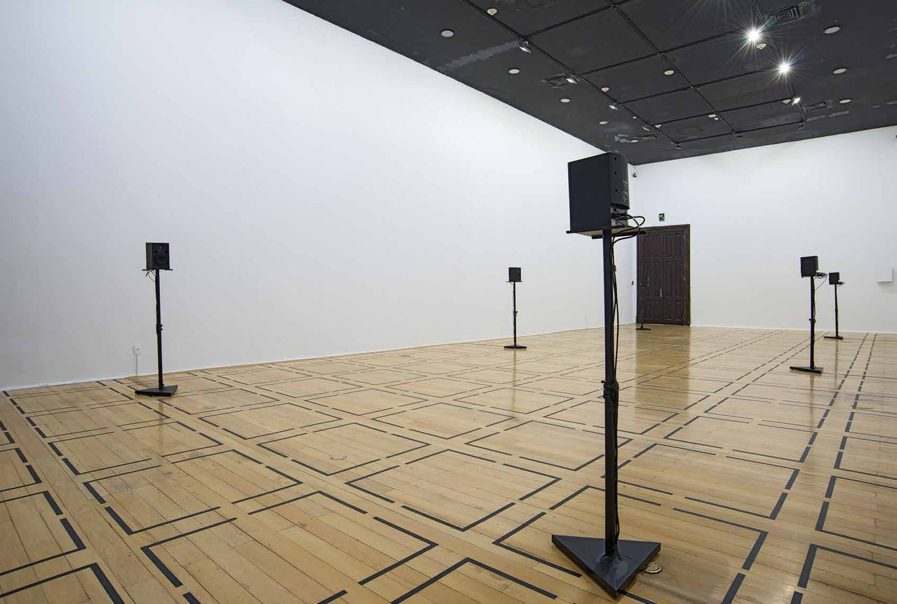
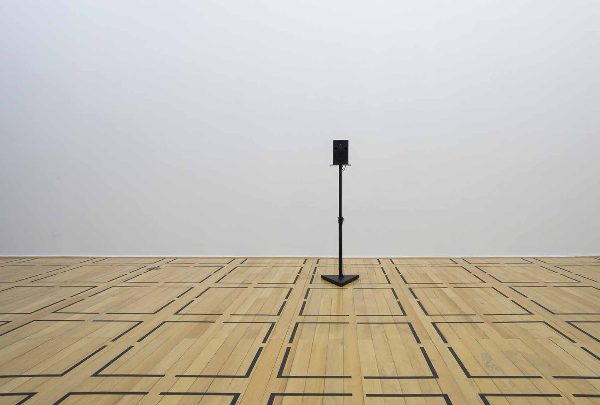
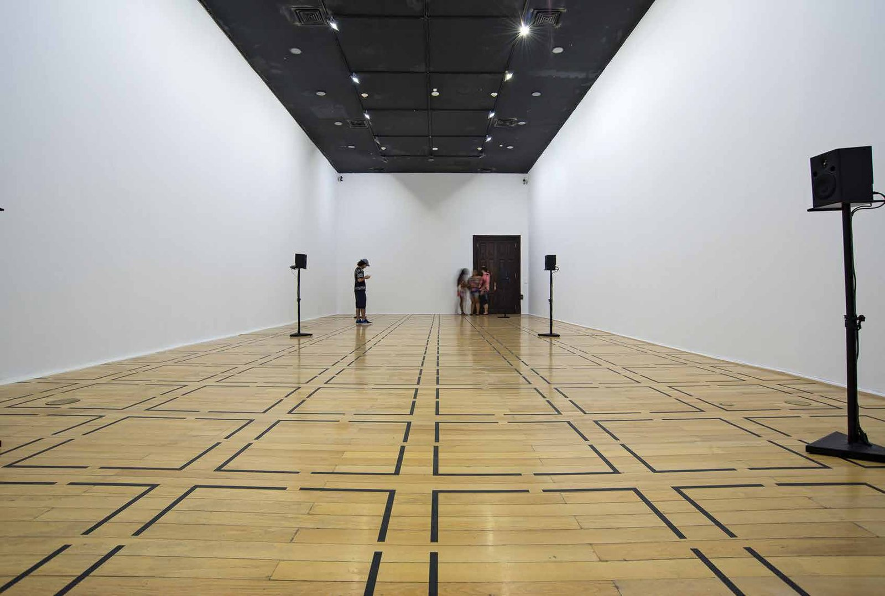

Errância
Prêmio CCBB Contemporâneo, 2015
Registro sonoro em preparação.
Instalação sonora com alto-falantes e gravações de conversas em bares da Gávea, Lapa, Leblon, Rocinha e Praça Tiradentes, captadas por um sistema de microfones montado no corpo de um passante. Prêmio CCBB Contemporâneo; Sala A Contemporânea, Centro Cultural Banco do Brasil, Rio de Janeiro, 2016.
- Prêmio
- Prêmio CCBB Contemporâneo, 2015
- Materiais
- Alto-falantes, gravações feitas com um sistema de captação montado no corpo de um passante
- Dimensões
- Dimensões variáveis
- Local
- Sala A Contemporânea, Centro Cultural Banco do Brasil, Rio de Janeiro
- Exposição
- Errância (2016)


